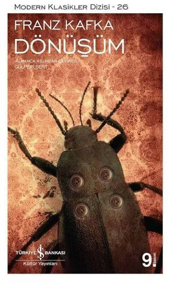

Dönüşüm
Türü: Edebiyatı Kitapları Kapak: Ciltsiz Sayfa Sayısı: 74
ISBN: 9786053609322 Basım Yılı: 2025 Kağıt Tipi: 2. Hamur
Franz Kafka’nın en bilinen eserlerinden olan Dönüşüm öyküsünün ana karakteri Gregor Samsa’dır. İşini sevmese de aile borçlarından dolayı çalışmak zorunda olan Samsa, gezici bir pazarlamacıdır. Bir sabah uyandığında yatağında kendisini bir böceğe dönüşmüş olarak bulmuştur. Bir böceğe dönüştüğü için yataktan bile çıkamayan Gregor Samsa’nın ailesi onun işe gitmediğini fark edince odasının önüne gelmiştir. Bu şekilde aile Samsa’nın böceğe dönüştüğünü öğrenmiştir. Gregor Samsa’nın işe gitmediğini öğrenen firma temsilcisi de Samsa’nın ailesiyle birlikte yaşadığı eve gelmiştir. Gregor Samsa’nın böceğe dönüşmesinden sonra onunla ilgilenen, yemek getiren tek kişi kız kardeşi Grete’dir. Bir süre ailesi Gregor Samsa’nın bu durumundan iyice rahatsız olan ailesi ondan kurtulmak istemiştir.